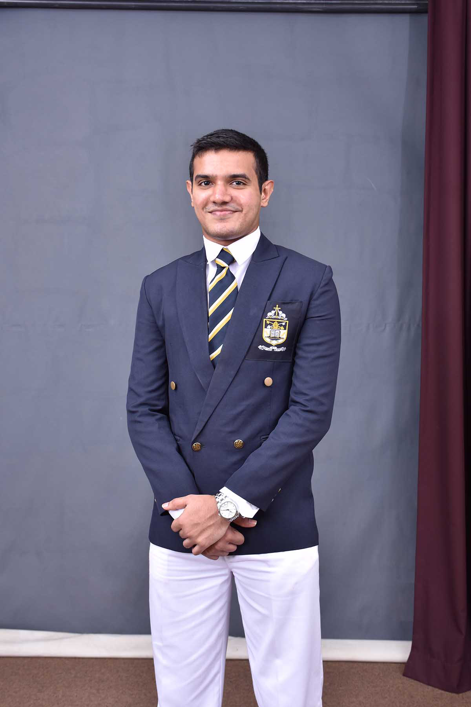

|  | As a web development student, I am deeply committed to exploring new technologies and techniques, and approach every project with a strong work ethic and passion for programming. My love for web development is evident in every aspect of my work, and I see this website as just the beginning of a journey that will be filled with continuous learning and improvement. I am excited to embark on this journey and eager to see where it will take me, and I invite you to join me on this exciting adventure. |
|---|